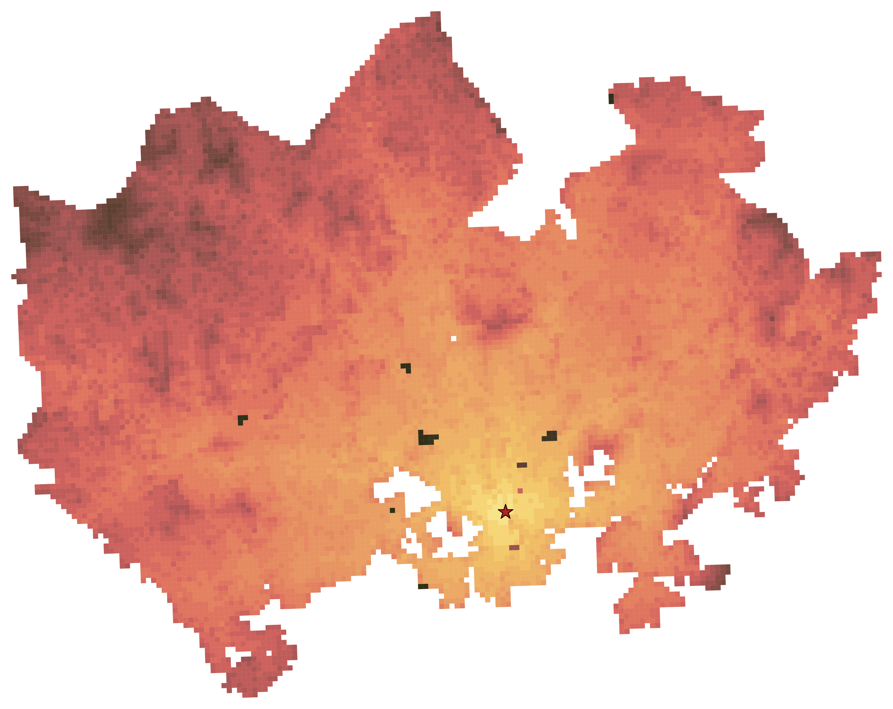
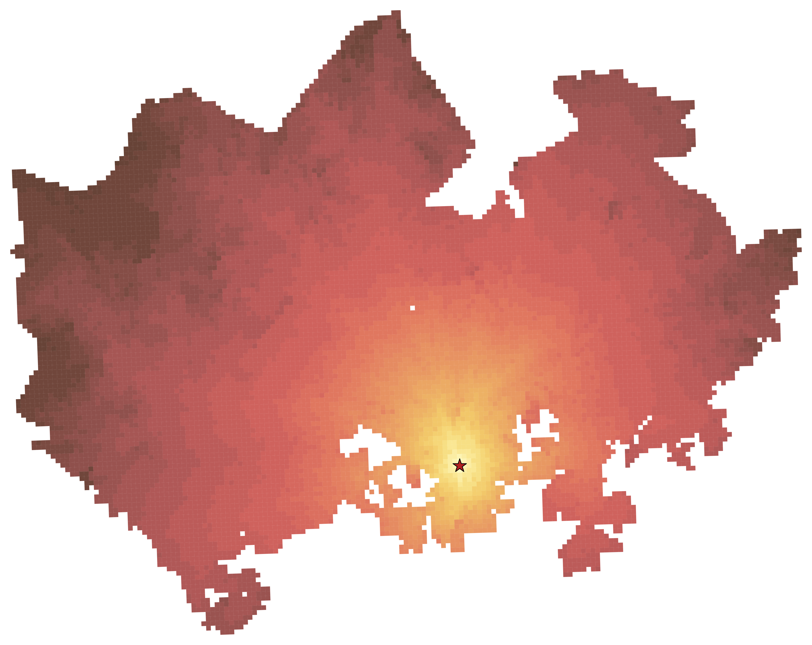
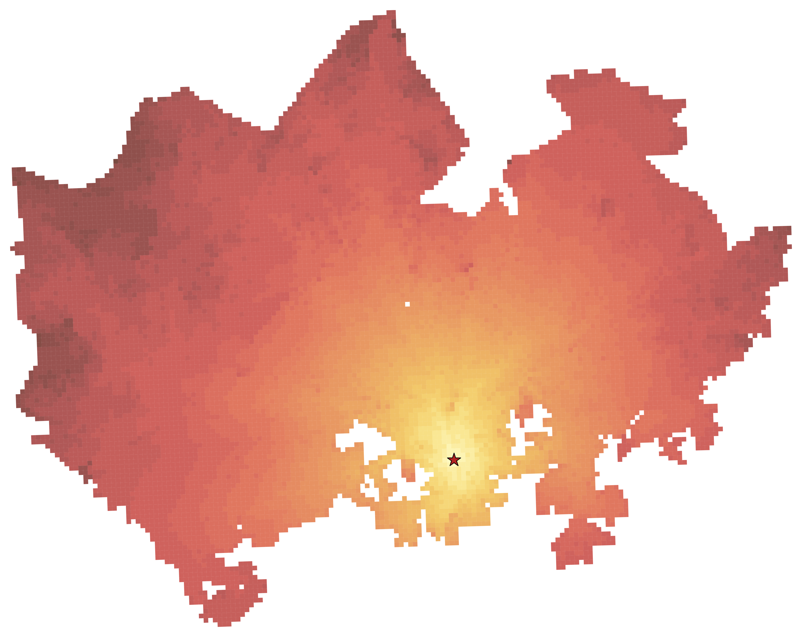
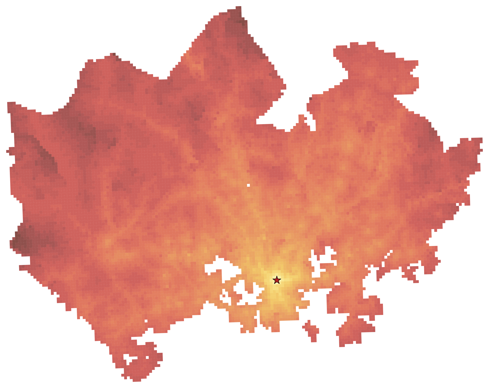
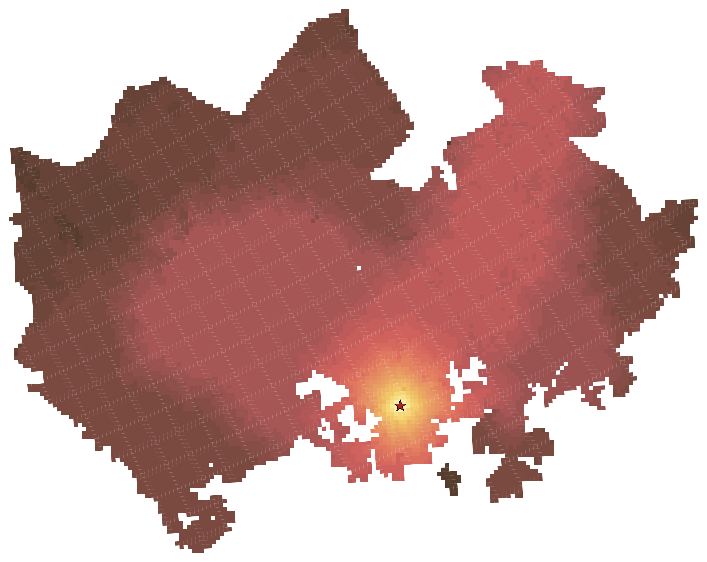
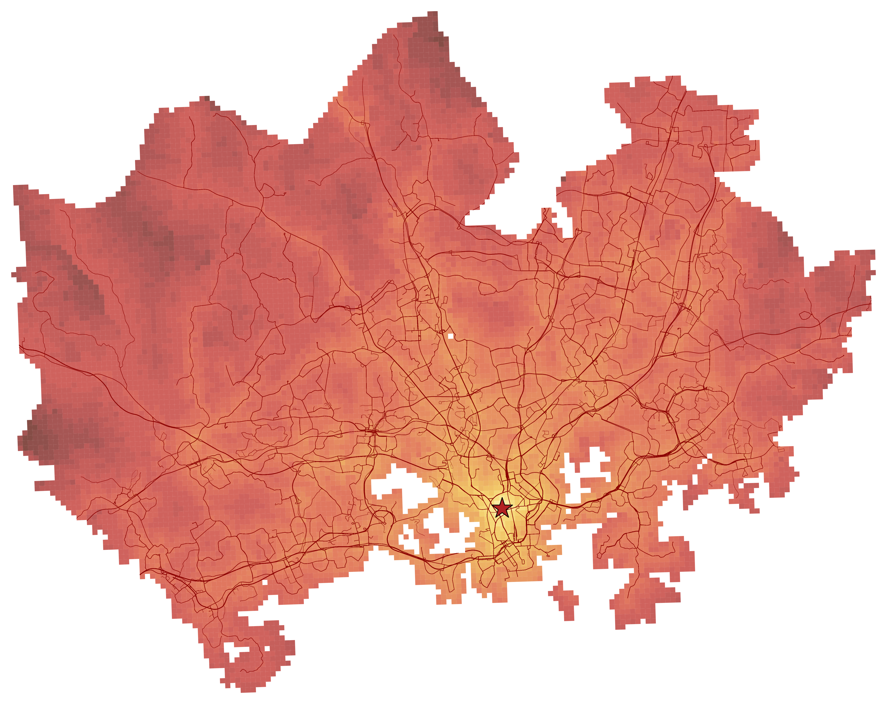

Car Travel Time

The following heatmaps show travel times from a selected grid cell in central Helsinki. Each map visualizes accessibility as a heatmap, where travel times are grouped into classes.
The car travel time maps use broader class intervals, while the public transport and cycling maps are based on the same class intervals to make them easier to compare with each other.





The map below shows the public transport travel time heatmap for rush hour together with the public transport network overlaid on top. This makes it easier to compare the travel time pattern with the structure of the network.
